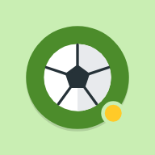

Små appar,
stora behov
Fyra appar för mobilen, byggda från samma mall. Bläddra för att se dem – och vad mallen betyder för dig.
Sist i presentationen kan du öppna apparna direkt i mobilens webbläsare, utan installation, eller läsa vidare i varje apps egen presentation.
Problemen med vanliga appar – och mitt alternativ
Vanliga appar vill för mycket. De kräver konto, samlar in din data på sina servrar och delar den ofta med annonsörer. De visar reklam, skickar notiser och kostar ofta en månadsavgift för det viktigaste. Mina fyra appar är byggda för att lösa just de problemen: gratis, ingen reklam, och din data lämnar aldrig telefonen.
Vanliga kaloriappar
Tusentals märkesdubbletter och en premiumvägg – när du bara ville lära dig vad maten innehåller.
→ Simple nutrition: en officiell källa, inga dubbletter, gratis.
Vanliga budgetappar
Vill koppla till banken och sortera varje kaffe – när du bara ville veta om månaden går ihop.
→ Budget buddy: planera månaden, ingen bankkoppling.
Vanliga fotbollsappar
Nyheter, spel och notiser – när du bara ville se tabellen och hur det gick för ditt lag.
→ Football, not soccer: tabell, matcher och ditt lag – inget mer.
Vanliga stressappar
Prenumeration, ljudbibliotek och påminnelser om att andas – när du bara ville förstå vad som stressar dig och vad som hjälper.
→ Stress control: skriv ner det, nästa steg, släpp tanken.
En sak, gjord riktigt bra – utan konto, utan reklam, utan avgift och utan datainsamling.
Byggda på samma grund
Vad har jag ätit i dag – och hur går vikten? Ett tryck per måltid: följde, fusk eller hoppade över. Kalorier ur Livsmedelsverkets data när du vill, egna rätter delade i matlådor, vikt och träning över tid.
Går månaden ihop? Planera inkomster och kostnader månad för månad i stället för att sortera varje kvitto. Se var det blir tight framåt, sparande och statistik – utan att koppla till banken.
Hur gick det för mitt lag? Tabellen, matcherna live och ditt lag i alla tävlingar – 16 ligor och turneringar. Inga nyheter, inget spel, inga notiser.
Vad snurrar i huvudet? Skriv ner det som en tråd med nästa steg och släpp tanken. Delmål, deadlines, personer och VAB-dagar – och en överblick över det som brinner.
Fyra appar – samma känsla


Idag · Vecka · Trend


Månad · Översikt · Statistik


Matcher · Tabell · Lag


Trådar · Överblick · Arkiv
Bläddra mellan apparna med ‹ › längst ner. Påhittad exempeldata.
Fem principer
- En sak per app. Varje app gör en sak riktigt bra. Allt annat väljs bort.
- Din data är din. Den stannar i telefonen. Inget konto, ingen server, ingen spårning.
- Snabbt i vardagen. Det vanligaste tar några sekunder – resten kan fyllas i senare.
- Enkelt att lita på. Liten kod utan beroenden, som går att läsa och testa.
- Bättre tillsammans. Det som blir bättre i en app förs in i alla.
Inget lämnar telefonen
Bara i telefonen
Ingen server, inget konto. Webbläsaren stoppar alla anrop ut – även om koden skulle försöka.
Låst backup
Ett tryck sparar en backup-fil, låst med ditt lösenord. Krypteringen är samma som banker och lösenordshanterare använder. Låt appen välja lösenordet, så går den inte att knäcka.
Spara lösenordet
Det finns aldrig i filen. Utan det öppnas backupen inte – inte ens av utvecklaren.
Enda undantaget: fotbollsappen hämtar resultat från en enda källa – aldrig med din data.
Spara som app på hemskärmen
Ingen app-butik behövs. En genväg på hemskärmen startar appen i eget fönster utan adressfält – den ser ut och fungerar som en vanlig app, även utan nät.
Android
Öppna i Chrome, Brave eller Samsung Internet. Tryck på ⋮ och välj Installera app eller Lägg till på startskärmen.
iPhone och iPad
Öppna i Safari. Tryck på Dela (fyrkanten med pil uppåt), välj Lägg till på hemskärmen och sedan Lägg till.
Dator
I Chrome eller Edge: tryck på installationsikonen till höger i adressfältet.
Öppnade du länken i Messenger eller en annan app? Välj först Öppna i webbläsare – annars går det inte att installera.
Öppna en app
Öppna i Chrome eller Safari på mobilen och välj Installera app / Lägg till på hemskärmen.